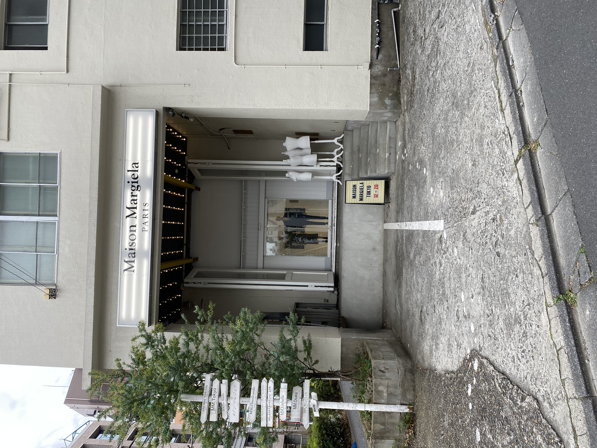

10月12日課題
１枚目
画像を表示（50%)

この写真は、私が１月１７日に恵比寿で撮ったものです。
Maison Margielaというブランドで香水やtabiシリーズで有名なお店です。
お店っぽい雰囲気がせずとても入りづらいです。
また横にある方向を示す看板の先には何もないので何の為ににあるのか分かりません。
2枚目
画像を表示(50%)
この写真は、私が５月３日に鎌倉周辺で撮ったものです。
パチンコ・スロットと記載されているのにゴリラが描かれていました。
手には赤いレンガみたいなものを持っていますが何も意味はないと思います。
駅スグと記載されていますが、車でないと厳しい距離だったと思います。
3枚目
画像を表示(50%)
この写真は、友人が京都旅行に行った際に撮ったものです。
私の名前と同じため送ってきたそうです。(読み方は違いますが、）
自分の名前が記載されている看板を初めて見たのでなんだかすごく嬉しかったです。
お土産屋さんらしいのですが、なぜこのような名にしたのか気になります.